题库编辑器使用指南
Question Bank Editor Guide · 题目管理与 AI 出题
功能概述

图 1：题库编辑器主界面 — 翻译题列表与题目卡片
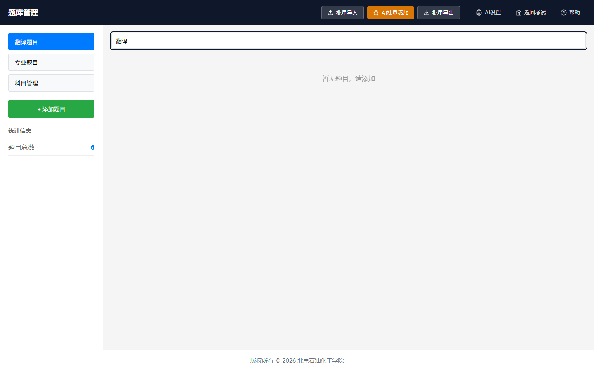
图 2：搜索框输入关键词后的筛选效果
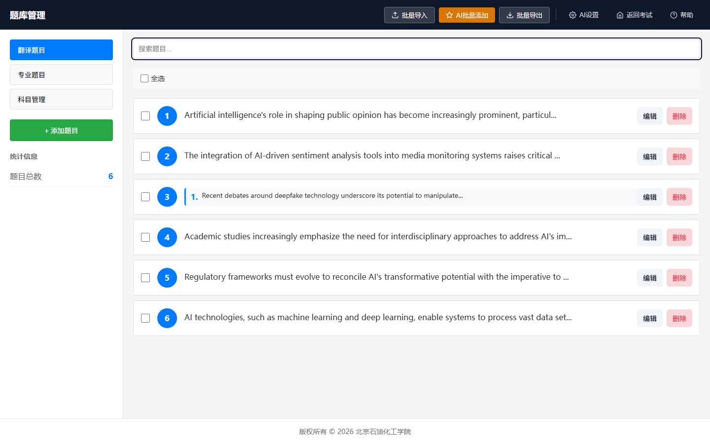
图 3：题目列表底部的分页控件
题库编辑器（路由 /editor）是考试系统管理所有考试题目的核心工具。支持翻译题和专业题的分类管理，提供完整的增删改查、批量操作和 AI 智能出题功能。
- 翻译题管理：管理英文翻译题目，支持单题和套题格式
- 专业题管理：按科目分类管理专业问答题
- 科目管理：添加、编辑、启用/禁用考试科目
- 套题支持：题目可以按套题格式组织，一次抽取多道关联题目
- AI 出题：使用 AI 智能生成单题或批量题目
- 批量操作：批量导入、导出、删除、修改科目
- 搜索筛选：关键词搜索 + 科目筛选 + 分页浏览
界面布局
页面结构
| 区域 | 内容 |
|---|---|
| 顶部导航栏 | 页面标题"题库管理"、批量导入、AI 批量添加、批量导出、AI 设置、返回考试、帮助 |
| 左侧边栏 | 题目类型切换（翻译题目 / 专业题目 / 科目管理）、科目筛选、添加题目按钮、统计信息 |
| 题目列表区 | 搜索框、全选/批量操作工具栏、题目卡片列表、分页控件 |
| 底部版权栏 | 版权信息和联系方式 |
顶部工具栏按钮
| 按钮 | 功能 |
|---|---|
| 批量导入 | 从文本批量导入题目 |
| AI 批量添加 | 使用 AI 智能生成多道题目 |
| 批量导出 | 将选中的题目导出为文本备份 |
| AI 设置 | 跳转到 AI 配置页面 |
翻译题管理
题目格式
翻译题支持两种格式：
| 格式 | 说明 | 使用场景 |
|---|---|---|
| 单题 | 一道题目包含文本和/或图片 | 简单的翻译段落 |
| 套题 | 一道题目包含多个子题，每个子题独立内容 | 多篇关联翻译材料 |
添加翻译题
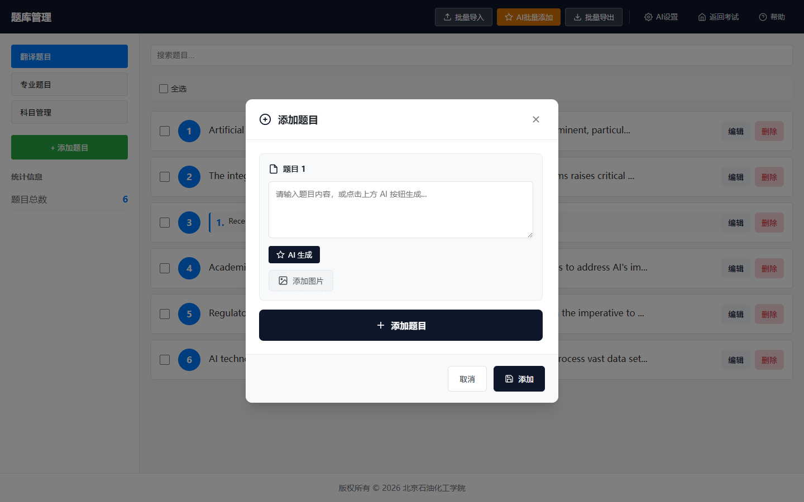
图 4：添加翻译题对话框（单题模式）
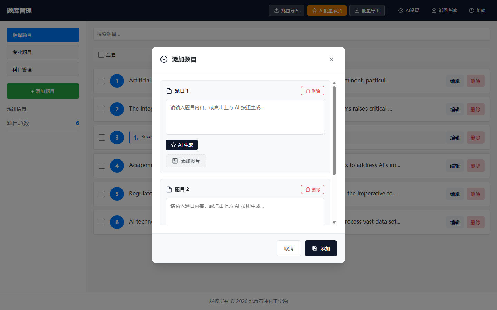
图 5：套题模式编辑界面（多个子题）
- 在左侧边栏点击"翻译题目"标签
- 点击"添加题目"按钮
- 在弹出的编辑对话框中填写题目内容
- 选择单题或套题模式
- 添加文本内容或上传图片
- 点击"保存"完成添加

图 6：题目编辑对话框中的 AI 生成按钮
题目卡片操作
- 编辑：点击卡片上的"编辑"按钮修改题目
- 删除：点击"删除"按钮移除题目（确认后不可恢复）
- AI 生成：每个子题下方有"AI 生成"按钮，可让 AI 辅助生成内容
- 图片预览：点击题目图片缩略图可放大查看
搜索与筛选
- 在搜索框中输入关键词，实时筛选题目
- 搜索范围包括题目文本内容
- 清空搜索框恢复全部显示
专业题管理
与翻译题的区别
专业题按科目分类管理，每道题目必须指定所属科目。考试时系统会先让考生选择科目，然后从该科目中随机抽取题目。
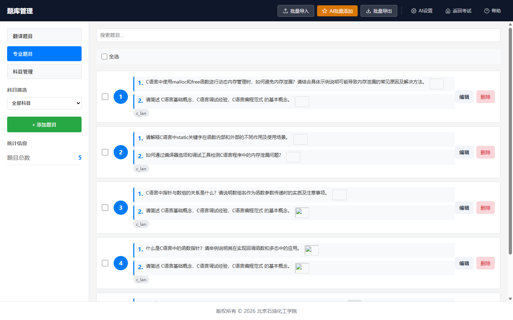
图 7：专业题列表界面（含科目筛选下拉框）
科目筛选
- 在左侧边栏的科目下拉框中选择要查看的科目
- 选择"全部科目"显示所有专业题
- 选择具体科目只显示该科目的题目
添加专业题
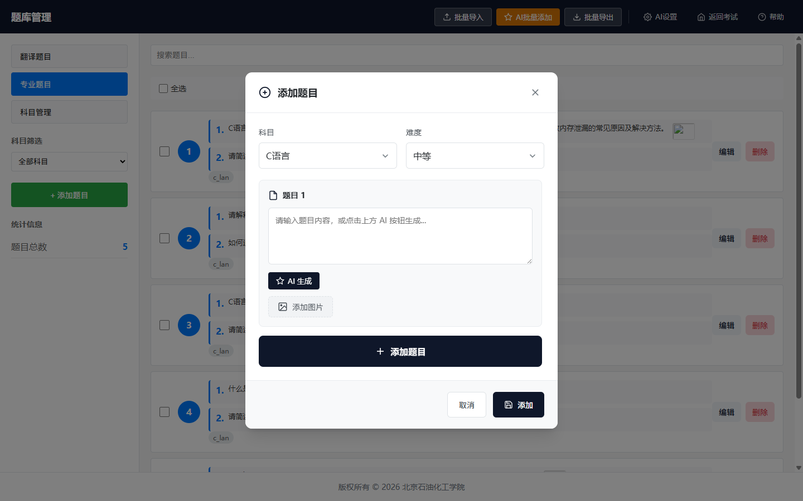
图 8：添加专业题对话框（含科目选择下拉框）
- 在左侧边栏点击"专业题目"标签
- 点击"添加题目"按钮
- 选择题目所属科目（必填）
- 填写题目内容（支持单题和套题）
- 添加文本或图片
- 点击"保存"完成添加
注意：专业题必须指定科目，否则无法保存。如果需要的科目不存在，请先切换到"科目管理"添加科目。
科目管理
科目操作
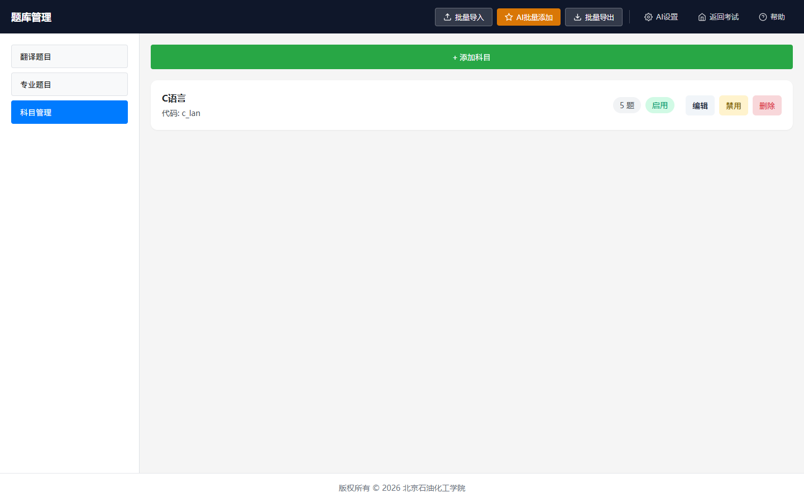
图 9：科目管理界面（科目卡片列表 + 添加科目按钮）
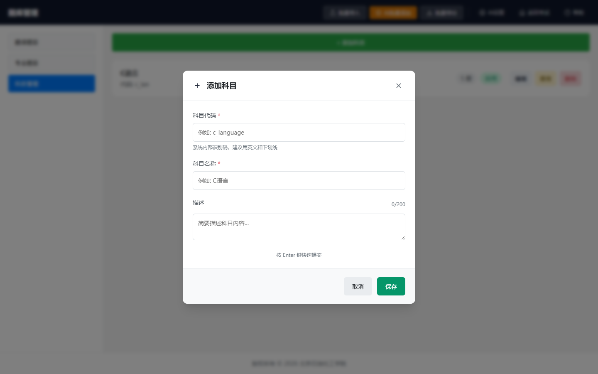
图 10：添加/编辑科目对话框
- 在左侧边栏点击"科目管理"标签
- 点击"添加科目"按钮
- 填写科目名称、代码和描述
- 点击"保存"完成添加
科目状态
| 状态 | 说明 |
|---|---|
| 已启用 | 该科目下的题目可被考试系统抽取 |
| 已禁用 | 该科目下的题目不会被抽取，但保留在题库中 |
科目信息
- 每个科目显示关联的题目数量
- 点击科目卡片可编辑科目信息
- 删除科目前需确保该科目下无题目
批量操作
全选与多选
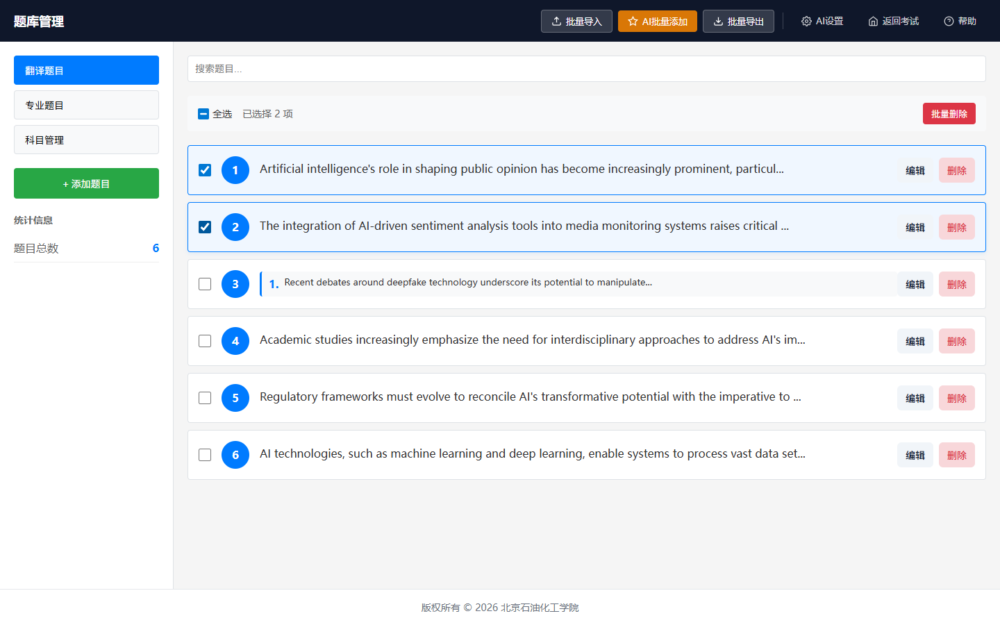
图 11：勾选多个题目后出现的批量操作工具栏
- 题目列表顶部有全选复选框
- 勾选后出现批量操作工具栏
- 可单独勾选或取消单个题目
批量操作类型
| 操作 | 说明 | 适用范围 |
|---|---|---|
| 批量导入 | 从文本批量导入题目 | 翻译题 / 专业题 |
| AI 批量添加 | 使用 AI 智能生成多道题目 | 翻译题 / 专业题 |
| 批量导出 | 将选中的题目导出为文本备份 | 翻译题 / 专业题 |
| 批量删除 | 一次性删除多道选中的题目 | 翻译题 / 专业题 |
| 批量修改科目 | 将多道题目批量调整到指定科目 | 仅专业题 |
批量导入
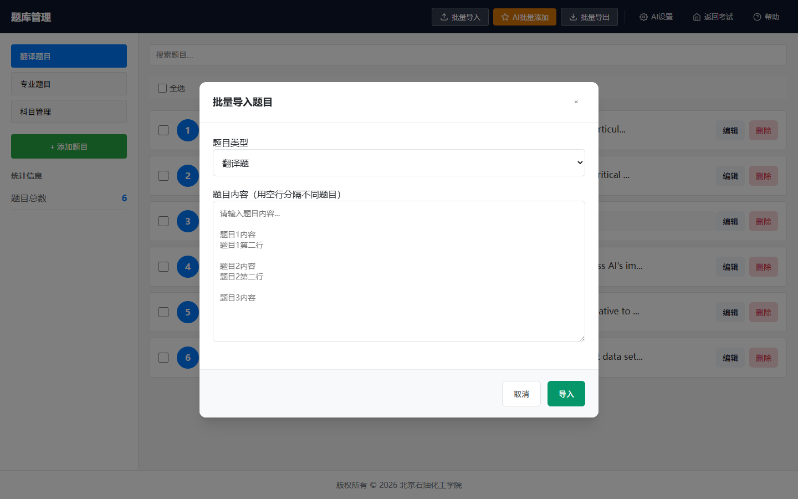
图 12：批量导入对话框（含文本输入区域）
- 点击顶部"批量导入"按钮
- 在弹出的对话框中粘贴题目文本内容
- 按照提示格式准备数据
- 点击"导入"完成批量添加
批量导出
- 勾选要导出的题目
- 点击"批量导出"按钮
- 在弹出的对话框中查看导出的文本内容
- 可复制到剪贴板或下载文件
注意：批量删除操作不可恢复，请在删除前先使用"批量导出"备份题目数据。
AI 出题
AI 单题生成
- 在题目编辑对话框中，每个子题下方有"AI 生成"按钮
- 点击后 AI 会根据题目类型自动生成内容
- 生成后可编辑和修改
AI 批量添加
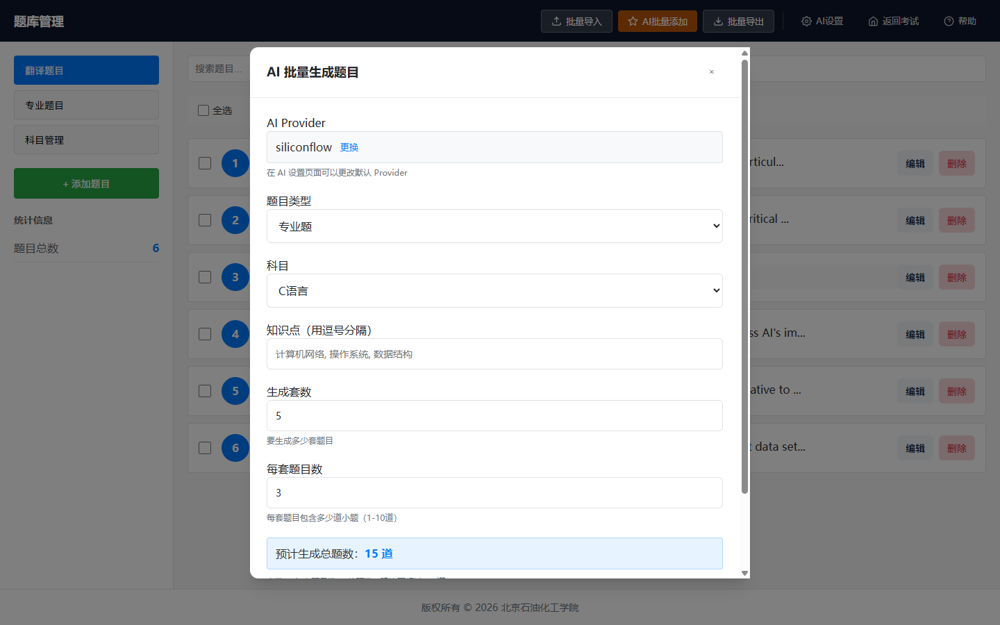
图 13：AI 批量添加对话框（含参数设置面板）
- 点击顶部"AI 批量添加"按钮
- 在弹出的对话框中选择题目类型
- 设置生成参数（数量、难度、知识点等）
- 选择 AI 提供商（需提前配置）
- 点击"生成"开始批量出题
- 生成完成后题目自动入库
前置条件：使用 AI 出题功能前，需要先在 AI 配置页面 中配置至少一个 AI 提供商的 API Key。